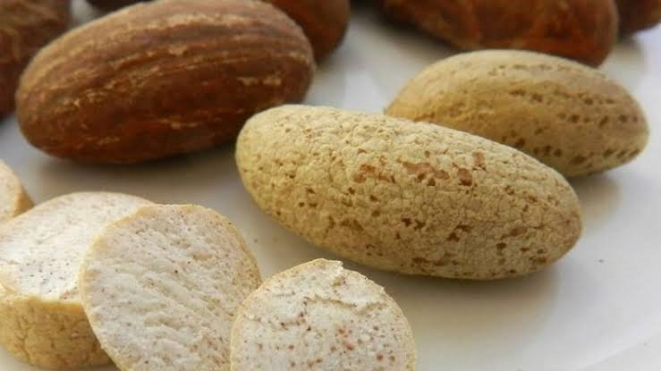

🌱 Crop Production

Benne Seed
Premium quality sesame seed cultivated using sustainable agricultural practices.

Bitter Kola
High-quality bitter kola sourced and produced for local and export markets.

Maize
Nutritious maize production supporting food and feed industries.

Cassava
Sustainable cassava cultivation for food and industrial applications.

Rice
Quality rice production contributing to food security and local supply.